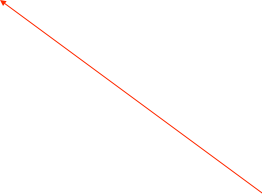

Manual Plotting


Analysis drawer
Tool bar for plots: switch Y-axis from log to linear, clear plot, show analysis window, etc...
Plot controls: auto-scale plot, reset axes, center peak, move view on the X-axis right and left (< > buttons), zoom in or out on X-axis (+ - buttons)

Hide/Show plot controls

Region of Interest (ROI) for analysis. Name appears at top as Curve,ROI number. Drag lines with mouse to change region. Shift-Click makes a new ROI. Tab key shifts between multiple ROIs.
Drag scales with mouse to change range
To do a curve fit, the OrcaROOT fit service must be running somewhere. The default location is crunch4.npl.washington.edu port 9090, but you may run OrcaROOT at a custom location.
Example script using the custom plotter
The following example collects the total histogram sum in a region of interest for each of one hundred two second long runs. This script assumes that you have set the variables, lowROI and highROI in the script dialog.
Get pointers to the objects that will be used
This is the data set holding the histogram from which this example collects the total sum
A loop to do 100 two second runs
At the end of each run, open the data set plot and the analysis drawer
Get the ROI and make sure it’s set to the right values
And finally, add the total sum in the region of interest to the plot
Set some labels on the plot and clear it
function main()
{
p = find(ORManualPlotModel,1);
h = find(ORHistoModel,1);
rc = find(ORRunModel);
if(p && h && rc){
[p setCol0Title:"Run"];
[p setCol1Title:"Total Sum"];
[p clearData];
//make sure no run is already in progress
if([rc isRunning]){
[rc stopRun];
waituntil(![rc isRunning]);
}
for(i=0;i<100;i++){
//do a two second run
[rc startRun];
waituntil([rc isRunning]);
sleep(2);
[rc stopRun];
waituntil(![rc isRunning]);
//OK the run is ended. get the analysis data
d = [h dataSetWithName:"DataGen,0,1"];
if(d){
[d makeMainController];
dialog = [d findController];
[dialog openAnalysisDrawer];
sleep(1); //wait for analysis to complete
gate = [dialog curve:0 gate:0];
[gate setDefaultMin:lowROI max:highROI];
[p addValue1:i value2:[gate totalSum] value3:0];
}
else print "couldn't find data set";
}
}
else print "all objects not found";
}
Set the ROI to some globals values
Keyboard Shortcuts
Drag the axis to manually scale
Tab Change focus to next ROI or data set.
Cmd-R Reset X axis to max, Reset Y
Cmd-X Autoscale X
Cmd-Y Autoscale Y
Cmd-A Autoscale X and Y
Cmd-T Tile all similar plots across screen
Cmd-U Undo the Tile command
Cmd-Click axis to place a marker
Cmd-Drag in plot to read out values at any point
Cntrl-Drag a box in the plot to zoom to area
Shift-Click to add ROI
Delete removes ROI (last one can not be deleted)
Opt-click shrink ROI to one chan width and moves it to the mouse position
Left/Right arrow moves ROI one channel Left/Right